Anthropic은 초기부터 코드 작성(코딩) 성능 향상에 모델 발전 투자를 집중해 왔다. 이러한 기반 위에서 모델이 스스로 스킬과 도구를 만들고 활용하는 에이전트형 AI(Claude)로 확장되었고, 그 결과가 지금의 Claude 생태계로 이어졌다.
한편, 코드를 작성하고 개발하는 사람들은 CLI(Command Line Interface)를 자주 사용한다. 그 이유는 \\터미널(작업창)\\을 여러 개 띄워 프로젝트별로 병렬 작업을 하거나, 동일한 환경에서 다양한 명령을 빠르게 실행하는 등 작업 효율을 극대화할 수 있기 때문이다.
CLI: Terminal 창에서, Claude와 대화, 지시, 작업 모든게 가능하다.
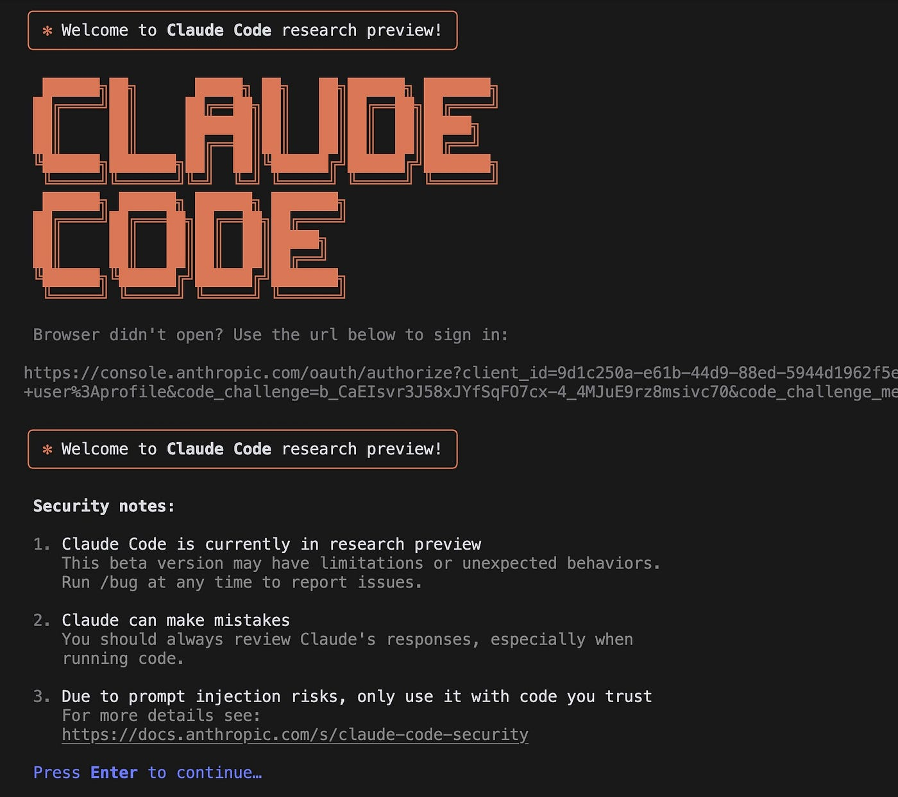
따라서, 이번시간에는Claude CLI의 기능 / 명령어에 대해서 알아보도록 하자.
Contents
- Installation (설치)
- Permission (실행 권한)
- Sandbox (접근 범위 격리)
CLAUDE.md(프로젝트 컨텍스트 파일)- Context Window (컨텍스트 구성 확인)
- Agents (에이전트 생성)
- Agent Teams (멀티 에이전트 협업)
- Remote Control (원격 제어)
- Conclusion (정리)
Installation
MacOS기준 설치 명령어이다.
Claude Code 설정 - Claude Code Docs
curl -fsSL https://claude.ai/install.sh | bash
지금 이렇게 project_claude라는 directory를 제작하였고, 이 안에서 여러 기능들을 테스트 해보도록 하자.
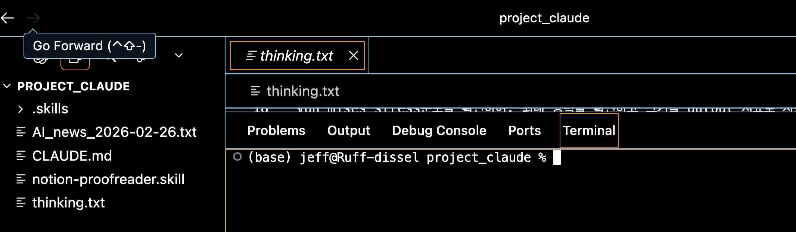
Permission
가장 먼저 주의할점은 안전장치이다. 즉, 클로드에게 권한을 어디까지 부여할 것인지 가 항상 중요하다.
그 중에서 permission은:
\tClaude가 명령어를 실행하기 전에 사용자에게 물어볼지 or 자동으로 실행할지.
를 결정하는 레벨이다.
terminal에 claude를 쳐주고 뒤에 모든 접근 권한 을 붙혀주자.(사용자의 니즈에 맡에 안붙히셔도 됩니다!)
#( All command 허용 실행)
claude --dangerously-skip-permissions
#or (기본실행)
claude
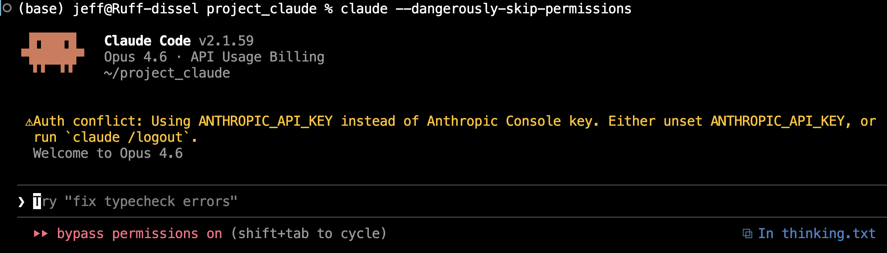
일단, 클로드가 명령어를 스스로 실행하는 능력을 부여해주기 위해서는 저 세팅이 필요하고,
만약에 명령어 실행전에 허락을 받도록 설정하고 싶다면,
slash + 퍼미션을 터미널에 입력해주면
/permissions
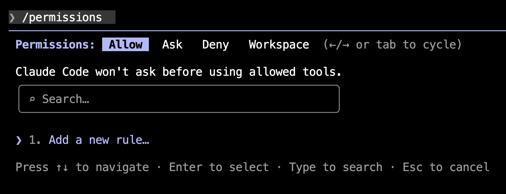
이렇게 4가지 옵션이 도출 된다.
- Allow - dangerously-skip-permission (전부 허용)
- Ask - user에게 실행전 물어보기
- Deny - 아예 거부
- Workspace - 현재 Directory에 있는 파일들만 수정가능
(즉 Desktop모드 보다 더 세밀한 안전장치 조절이 가능하다)
Sandbox
다음 중요한 안전장치 설정인 Sandbox는 Claude를 box에 가두는 방식이다.
CLAUDE가 어디까지 접근 할 수 있는지, 어떤 파일 시스템 / 네트워크 / 시스템 자원에 접근 가능한지.
‘실제 격리 환경’을 설정하는 것이다.
Permission vs Sandbox
(위 permission은 command 실행 권한이고, sandbox는 데이터, 네트워크 접근 권한이다)
Claude측에서 말하는 Sandbox의 장점:
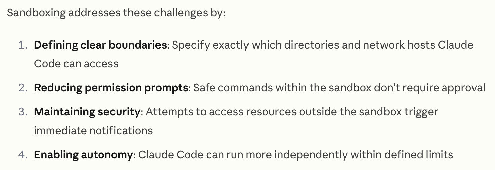
쉽게말해서, 연이어서 어떤 작업들을 하는 경우가 굉장히 많은데 이런 경우 허락을 물어보면, 작업이 끊기고 속도가 저하된다 라는 말을 한다.
설정방법은, CLAUDE CLI에서 아래 명령어를 실행하자.
/sandbox
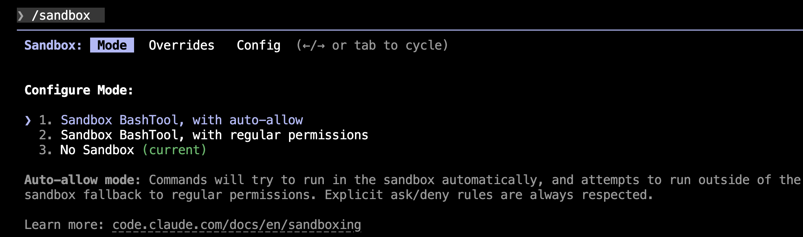
Claude 공식 문서에서 설명하는 두가지 Sandbox 방법은 다음과 같다:
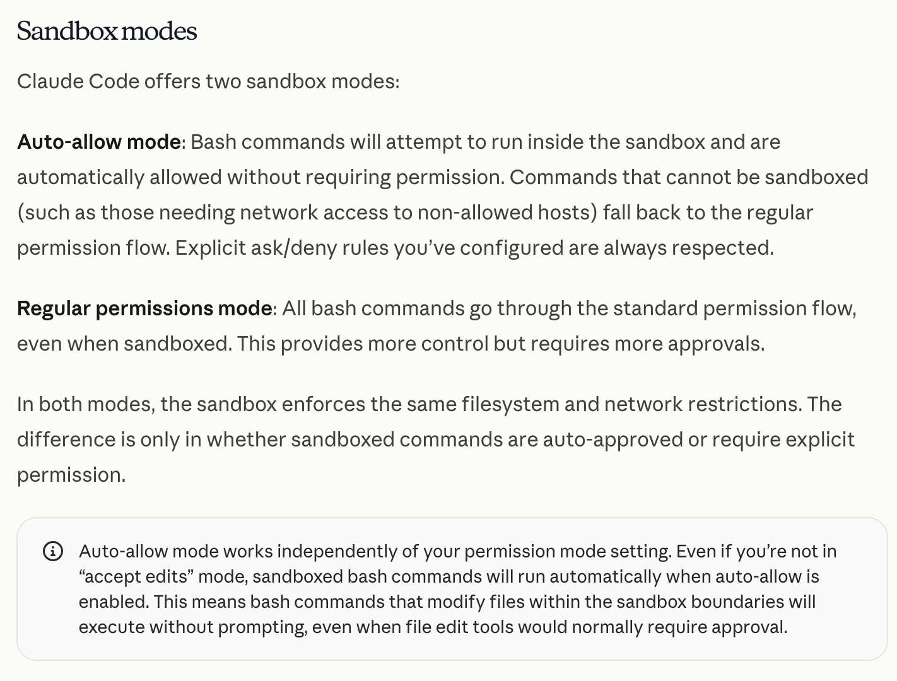
다시말해,
Auto-allow mode: Sandbox 내부이면 모든 접근, command 혼자 가능
Regular permission mode: Sandbox 내부이어도, permission flow를 따라간다.
(permission이 deny, … 이면, 커멘드 불가능 함)
이제 Mode → Overrides로 넘어가면 또 두개의 갈랫길이 나온다.
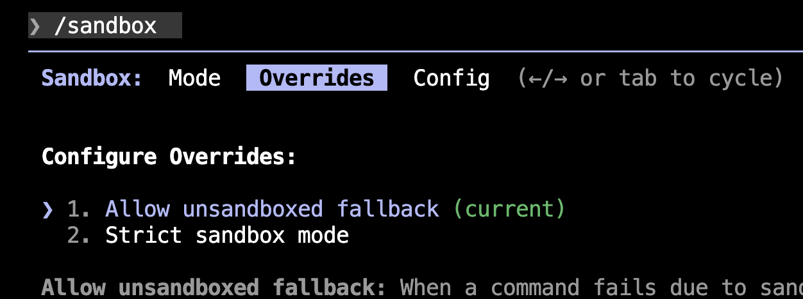
Overrides의 핵심 질문
“샌드박스 밖으로 나가야 하는 상황이 오면, 그걸 허용할 것인가?”
- Override = OFF (기본적으로 더 안전함)샌드박스 밖 접근이 필요하면 그 시점에서 작업이 막힌다.즉, Claude는 “울타리 밖”으로 못 나가고, 사용자는 안전하게 통제할 수 있다.
- Override = ON (편하지만 위험도 증가)샌드박스 밖 접근이 필요할 때 사용자에게 허용 여부를 물어보고, 승인하면 일시적으로 울타리 밖 작업을 허용할 수 있다.즉, 작업 성공률은 올라가지만, 그만큼 권한이 넓어져 리스크도 함께 커진다.
한 줄 요약
- Sandbox Mode: “울타리 안에서는 자동으로 할까? (자동 승인 vs 수동 승인)”
- Sandbox Overrides: “울타리 밖으로 나가야 할 때, 예외를 허용할까? (예외 허용 여부)”
CLAUDE.md
Desktop mode에서도 굉장히 중요하다고 말씀드렸던 파일이다. 즉, 이 프로젝트가 어떤 프로젝트이고 목표를 달성하기 위해서 클로드(Agent)가 해야하는 role, skill, tool, plug -in 이 무엇인지와 process를 적어주는 파일이다.
현재 디렉토리에 이렇게 존재하는 것을 알 수 있고,
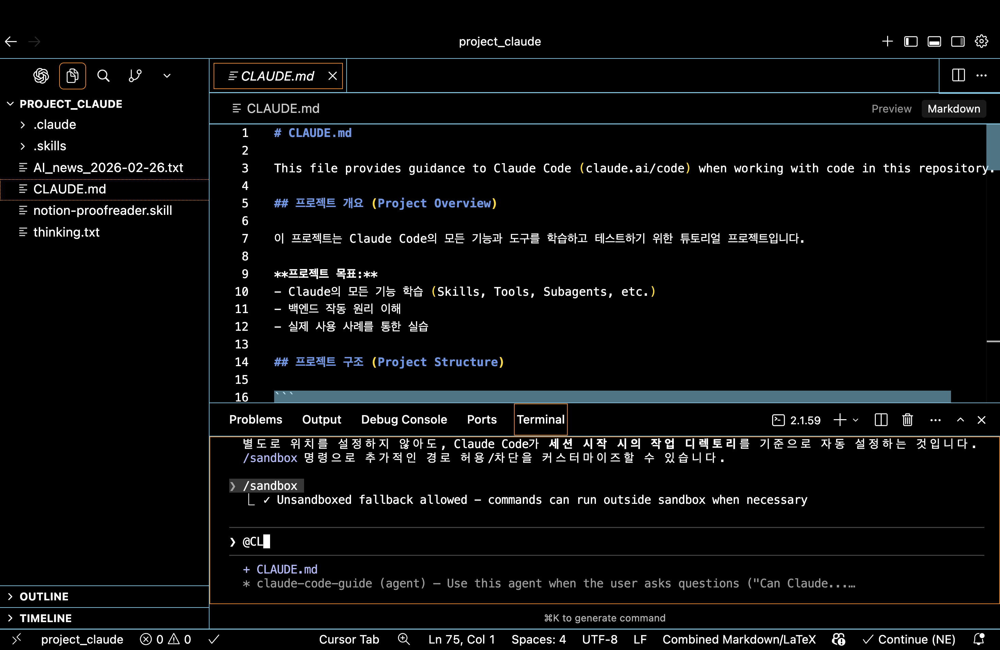
혹시 존재하지 않는다면, 혹은 새롭게 다시 정의하고 싶다면 터미널에:
\t
\t\tpython
/init
\t\t
\t\t
\t
\t
\t\t[IMAGE: images/img-010.png]
\t
자연어로, 어떤 에이전트를 새롭게 정의하고 싶은지 작성하면 클로드 스스로 CLAUDE.md파일을 작성한다.
Context Window
위 CLAUD.md파일이 중요한 이유는. 매번 Context window의 앞단에 들어가기 때문이다.
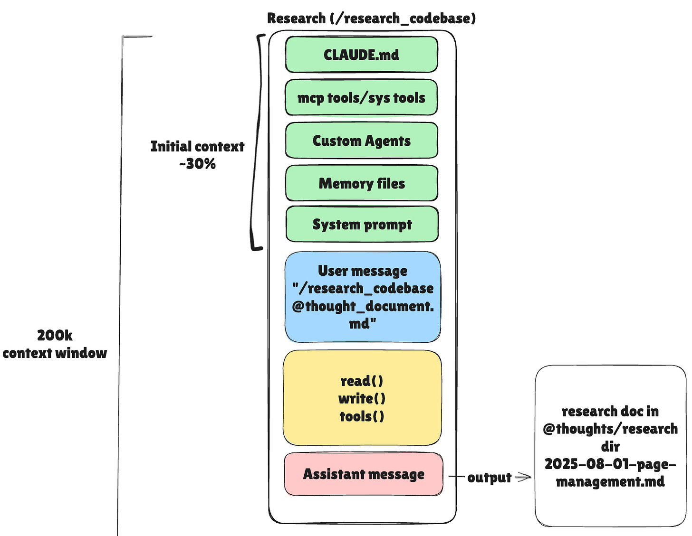
그렇다면 현재 Context window의 구성은 어떻게 되어 있을까? 를 체크하기 위해서 다음 명령어 기능을 클로드는 제공한다.
\t
\t\tpython
/context
\t\t
\t
\t
\t\t[IMAGE: images/img-012.png]
\t
즉 클로드는 우리가 가지고 있는 도구와 스킬 그리고 메모리를 함께 Context window에 담아 LLM에 전달한다.
\t
\t\t[IMAGE: images/img-013.png]
\t
\t
\t\t[IMAGE: images/img-014.png]
\t
Agents
클로드 기능 중 굉장히 중요한 기능인 에이전트 기능이다. 우리가, 우리를 위한 어떤 인력을 하나 define할 수 가 있다. 터미널에 agent를 작성해주자.
/agent
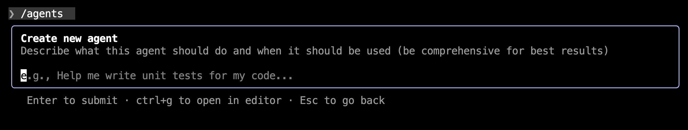
이렇게 자연어로 어떤 역할을 하는 에이전트인지 그리고 사용할 도구나 plug-in에 대해서 같이 작성해주면 더더욱 생산성 있는 에이전트를 하나 만들 수가 있게 된다.
(자연어로 설명해주면, 알아서 만들어 준다)
e.g.)
Notion의 페이지 그림과 글을 가지고 피피티를 제작하는 Agent를 만들어 보았다.
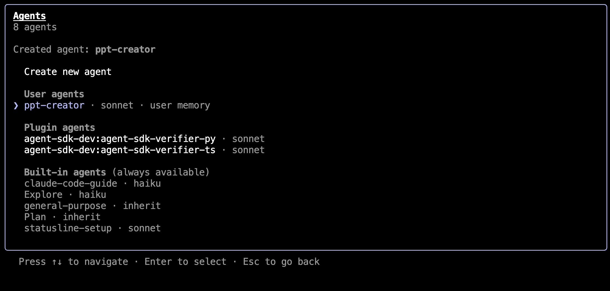
저 에이전트를 클릭하면, 수정 삭제 확인도 가능하다.
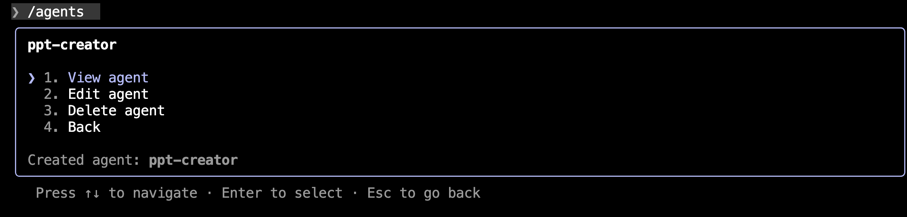
바로 사용해보자.
나: “
PPT Creator agent를 활용해서 Claud-Code(CLI) Notion page의 내용을 ppt로 제작해줘”
스스로 파이썬 코드를 작성 → ppt를 제작하였다.
(Note: powerpoint, gamma 등 외부 connector가 연결이 되어 있다면, Agent에게 꼭 미리 말해주면, 그 커넥터들을 사용함, 저는 연결이 안되어 있는 상황)
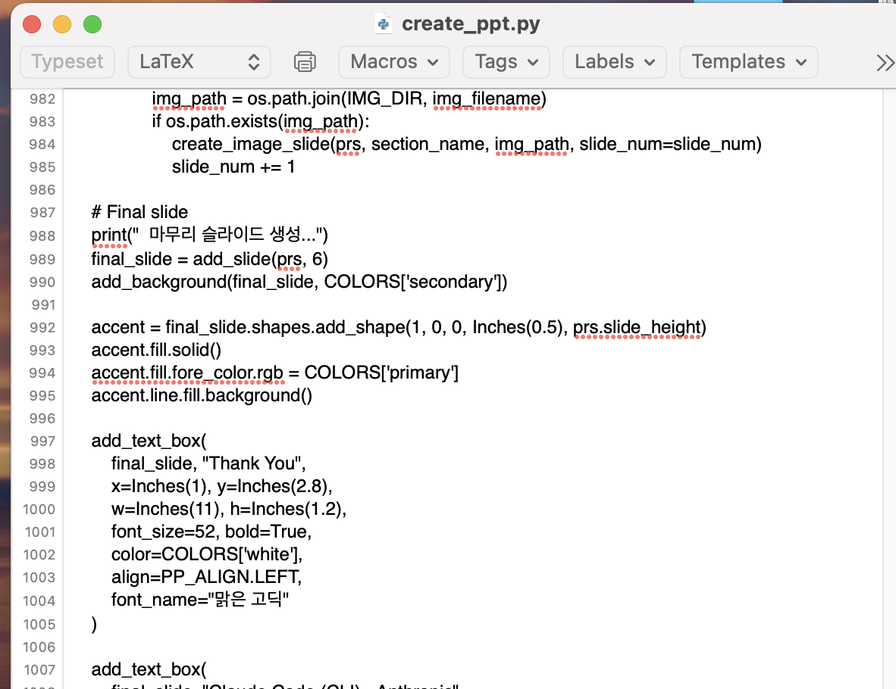
완벽한 ppt는 아니지만, 그래도 순서, 사진, 글 내용은 그대로 가져오는 것을 확인 할 수 있다.
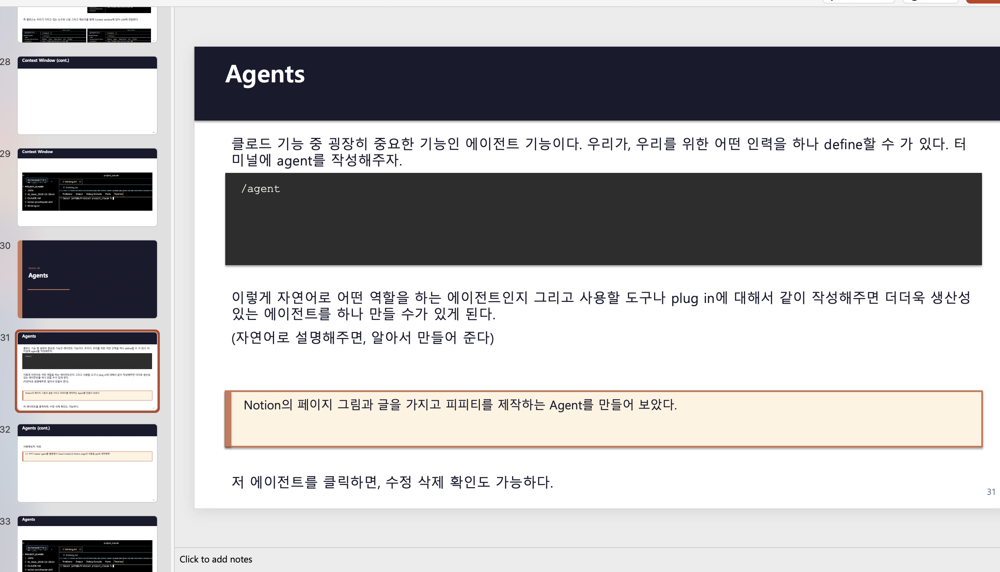
Agent team
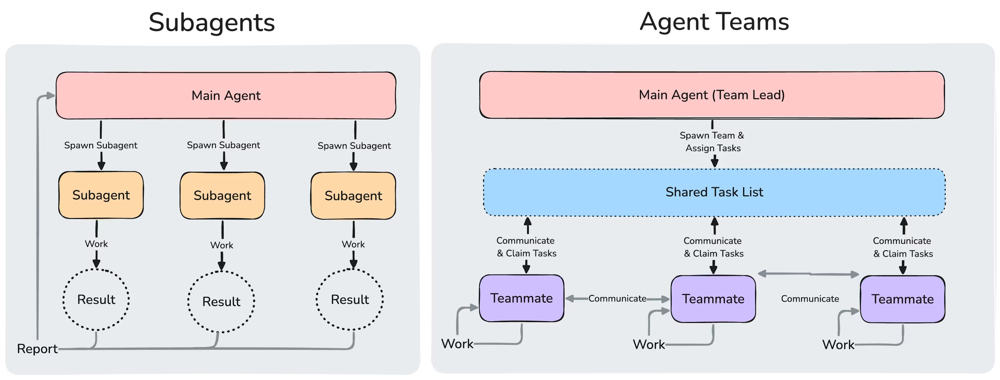
(2026.02)에 발표한, (현재 기준 2주 전)에 발표한 굉장히 따끈따끈한 기능이다. 바로
Agent Teams . 그전에 기존의 subagents에 대해서 짚고 넘어가자. - 독립적인 여러 작업을 동시에 할때 →
subagents- 독립적이지 않고, 서로 공유/대화를 하면, 더 효율적인 작업을 동시에 할때 →
Agent Teams
시작하기전에 2가지 세팅을 해야한다.
1. tmux → 터미널 창을 분할하여 여러개 띄우기 위해(여러 에이전트 실행)
2. \~/.claude/settings.json 수정 → Team mate 설정 활성화.
Tmux
쉽게, Terminal을 여러개로 분할해서 작업을 용이하게 만드는 패키지이다.
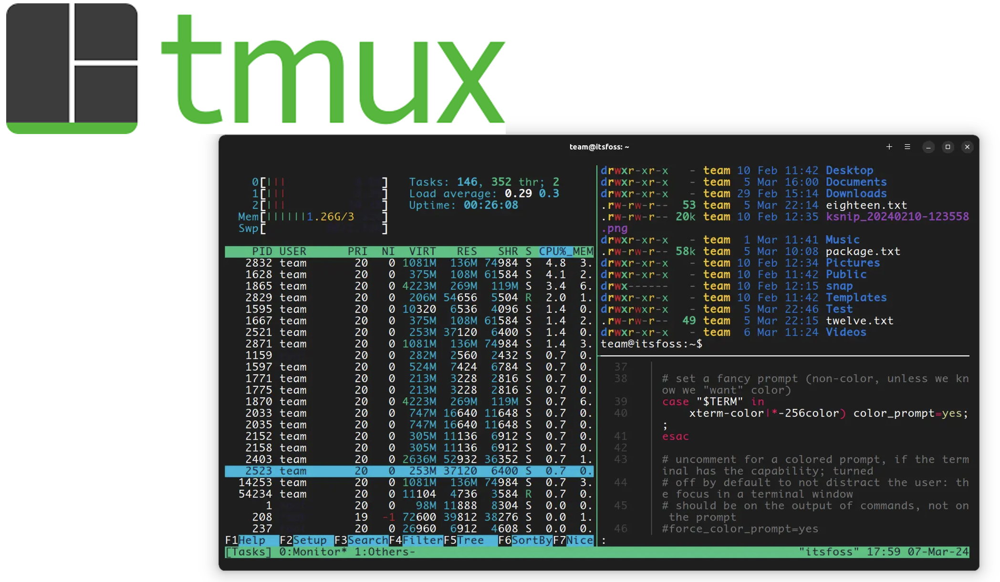
tmux 설치 후 확인.
brew install tmux
which tmux
이제, 먼저 Claude를 나간 후에, tmux를 접속해주자.
tmux turn on
tmux
Settings.json file
이후에, Claude Docs에서 명시되어 있는
→ \~/.claude/settings.json 수정 → Team mate 설정 활성화
→ Claude 접속후 /config 명령어 → Team mate mode 확인후, tmux로 변경.
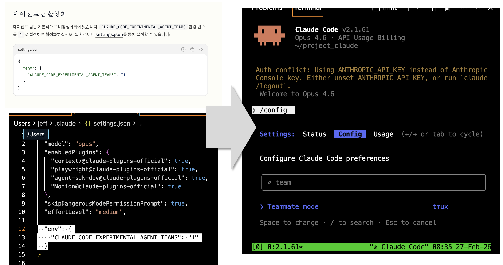
이제 예시를 시작해보자.
Goal: 개인 블로그 내용을 읽고, 수정해야할 부분을 따로 작성해주기, 굉장히 많은 포스터가 있으므로 일을 분할해서 여러명에서 진행을 함. (but Notion 템플릿을 공유해야함)
Prompt:
명심해 무조건 무조건 에이전트 팀을 활성화해서 사용해줘,
(무조건 이 기능을 사용해주어야 해).
팀 이름: 블로그 내용 수정팀
팀 목적: 블로그 url - https://github.com/Sehyeogkim/Sehyeogkim.github.io
에 접속을 해서, 모든 포스터 내용을 일은 후, 수정해야할 내용들을 {이름_수정내용.txt}파일로 현재 dir에 전체 저장폴더를 만든 후에 저장해줘.
수정해야할 내용은 다음과 같아
1. 한국, 영어 문법 오류. (한국 -영어 혼용은 수정하지마 내가 일부러 글 작성 스타일이야)
2. 문단 가독성이 너무 떨어지는 경우.
- 엔터가 너무 자주 있는 글이 있었어. 그런 경우 글을 합쳐주라.
- 그리고, AI - Claude 글 스타일 가이드를 참고해서 수정해줘.
(클로드 글은 notion에서 작성을 한거라서, 가독성도 좋고, 중간중간에 막대기___ 이런것들도 있어서, 굉장히 가독성이 좋아.)
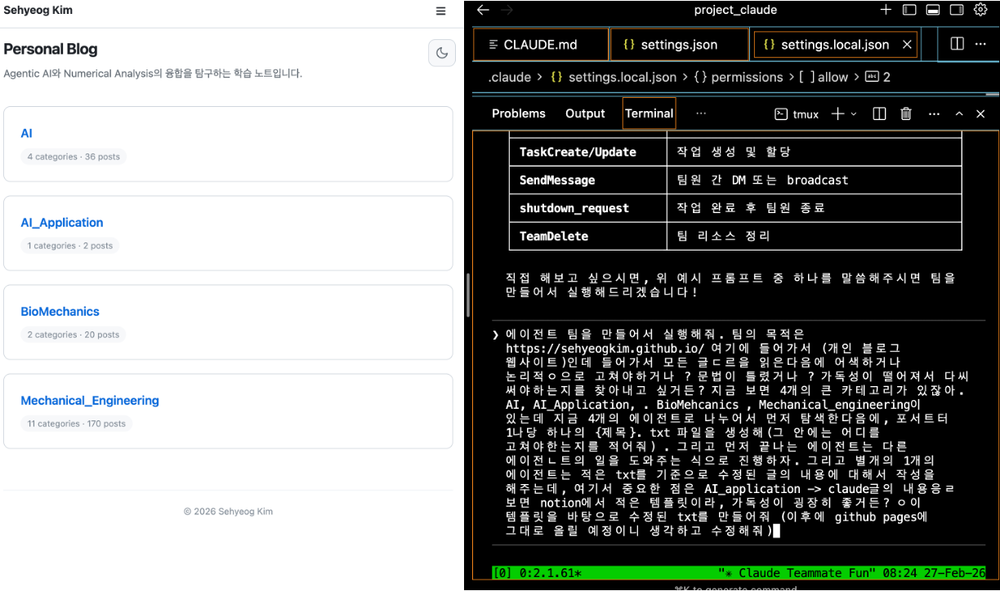
(아 실행을 하기 전에 Plan mode를 무조건 거쳐야 한다.)
팀 구성을 어떻게 할 것인지에 대해서, plan mode를 통해서 확인하자.
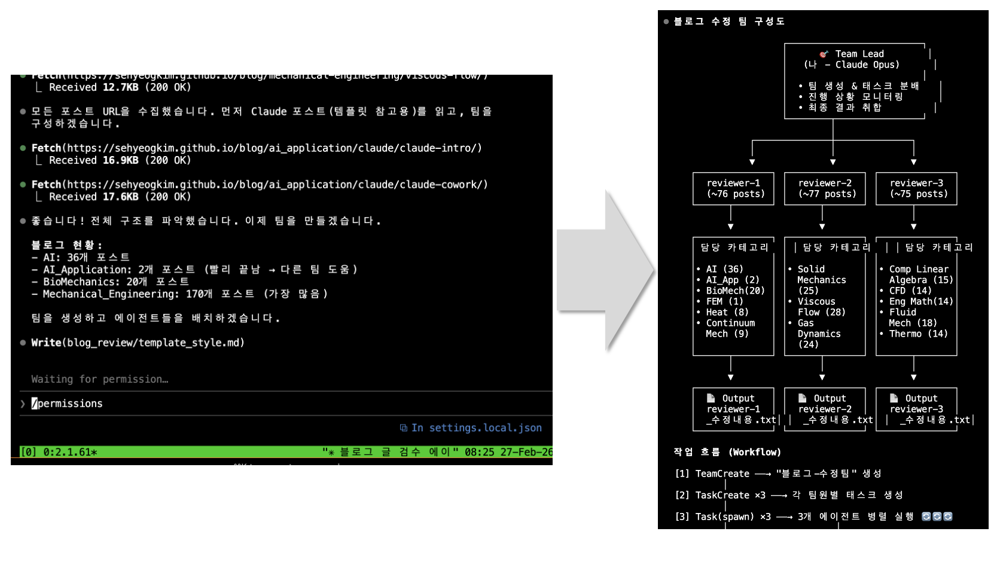
이제 실행을 하면, 왼쪽 : Orchestration agent → 우측: 이제 여러 subagent (total team)
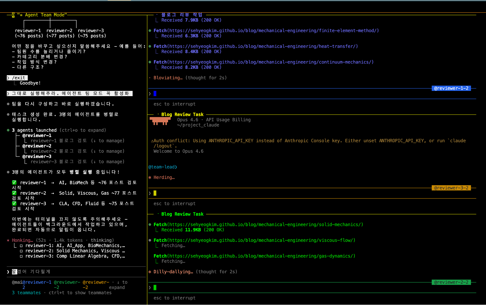
이
좌측에서 지금 현재 상황에 대해서, 계속 대화하며 모니터링을 할 수 있으며, 우측에서도 subagents들과 이야기를 진행 할 수 있다.
Remote - Control
(MAX version 만 현재 지원해서, 사용 불가능한 상황… )
(TBU)
Conclusion 섹션 요약
이 섹션은 Claude CLI의 핵심 강점과 한계, 그리고 미래 전망을 논한 최종 결론이다.
강점: Desktop 모드 대비 세밀한 제어 기능 제공. 특히 실시간 토큰 사용량 및 Context Window 구성 확인 기능은 비용 가시성 측면에서 중요한 경쟁력이다.
한계: 모델 선택의 유연성 부재. 현재 구조는 최고성능 모델 중심으로 설계되어 있어, 간단한 작업(요약·교정·가벼운 코딩)에도 고비용 모델이 적용되는 비효율이 존재한다.
미래 전망: 두 가지 생태계로 분화될 것으로 예측한다. (1) 최신 고성능 모델 기반의 프리미엄 Agent 플랫폼과, (2) 작업 난이도에 따라 모델을 선택적으로 배분하는 오픈소스/맞춤형 Agent 생태계(예: OpenClaw). 단순 작업 → 저사양 모델, 고난도 추론 → 최신 모델의 하이브리드 전략이 비용 최적화의 핵심이 될 것이다.
최종 시사점: Claude CLI는 현재 가장 강력한 Agent 플랫폼 중 하나이지만, 장기적 경쟁력은 \"기능 풍부함\"과 \"비용 효율성\"의 균형에 달려 있다. 이를 확장하면, 개인(Patient/Person) 특화 Agent 모델 설계의 필요성으로 이어진다.